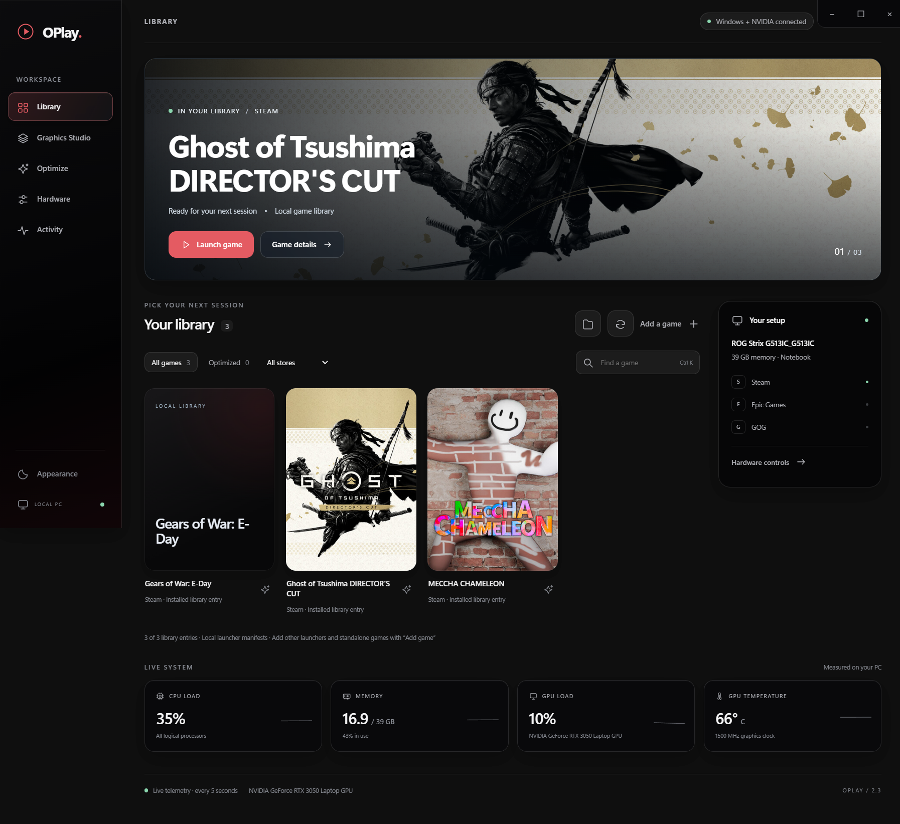

Library
Find Steam, Epic and GOG games locally. Import other game executables or folders yourself. Launch from a single view.
OPLAY 2.5 · WINDOWS
A local library for your PC games, graphics runtimes and hardware controls. Built around what is actually installed on your machine.
Windows x64 · Portable executable · Open source · Unsigned build

THE APP
One navigation rail. Your actual game artwork. Controls that show what changed and how to undo it.
Find Steam, Epic and GOG games locally. Import other game executables or folders yourself. Launch from a single view.
Choose MFG, neural rendering or FSR frame generation from each game. Watch downloads, verify each install and catch startup crashes.
See live telemetry. Apply reversible Windows gaming preferences and supported NVIDIA GPU tuning with recovery safeguards.
GRAPHICS STUDIO
OPlay shows download progress, checks installed files and watches each game start. If a new package triggers a Windows crash, it restores its unchanged files and tests again. Direct installs, MFG modules, neural-rendering files and FSR frame-generation routes share the same restore path.
Read the safety notes ↗BEFORE YOU DOWNLOAD
CURRENT RELEASE · V2.5.0
Get the portable Windows build, check its SHA-256 and read the installation guide.